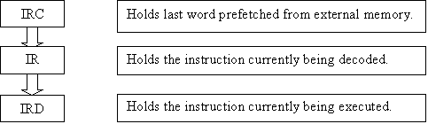

Version 1.3
Copyright © 2005 by Jorge Cwik.
http://pasti.fxatari.com
This documented may be freely distributed as long as is not modified in anyway.
Chapter I: Introduction
Chapter II: Technical
description
Chapter III: Prefetch
tables
Most CPUs, including many old 8-bit ones, read from the instruction stream ahead of execution. This mechanism is usually known as prefetch, queue or pipeline. The main goal is to optimize resources and gain in performance thanks to concurrent execution.
Modern processors implement this very aggressively and attempt to fill the prefetch queue as much and as early as possible. A modern CPU can partially process one instruction while other is executing, or even actually execute multiple instructions simultaneously (superscaling or multicore).
The 68000 is not as powerful, it is quite an old CPU. It can’t execute two instructions at the same time. But it can read and decode the next instruction while the current one is being executed.
The prefetch queue in the 68000 is a simple FIFO (first in, first out) with space for two words (four bytes). This means that before any instruction starts execution, its opcode word and the next one were already read. The second word, depending on the instruction, could be an extension word for the current instruction, or the opcode for the next one.
A modern CPU usually has more or less independent separate units. One unit processes actual CPU operations such as arithmetic or logic operations, while other unit fills the prefetch queue. This way the prefetch unit can attempt to read from the instruction stream whenever the bus is free and there is still enough space in the queue. And the CPU can keep its internal processing as long as operations are pending and data is available. So one unit normally doesn’t need to wait for the other one. If the prefetch unit is delayed because external RAM (or ROM) is not fast enough, this won’t necessary delay internal execution.
It is important to understand that the 68000 prefetch is rather simple, and not as complex as in a modern CPU. All bus accesses, including prefetch ones, are fixed in microcode. Different instructions might perform the prefetch access differently than other instructions. But for a specific opcode, prefetchs are always executed exactly at the same cycles. The actual absolute time depends on the external system. And if any bus access (prefetch or not) is delayed because of wait states, then the whole CPU process is stalled.
The prefetch queue is re-filled during the execution of an instruction. Most instructions perform as many prefetch cycles as the total number of words in the instruction. For example NOP, the simplest instruction, it performs one prefetch at the address two words (four bytes) above the location of the NOP. MOVE $10000,$20000, one possible form of the longest instruction, performs five prefetch cycles.
The exceptions are instructions that modify the instruction stream, such as branches. They sometimes need to perform extra prefetch cycles from the new modified program counter.
The prefetch queue results in faster execution due to optimization of CPU resources. On one side bus utilization is optimized. Many instructions have cycles that don’t need to access the external bus. The extreme cases are slow instructions like MUL, DIV and SHIFTS. While the CPU is busy with its internal processing, it can perform prefetch cycles for the next instruction without affecting the current instruction in any way.
But the most important gain is related to concurrent execution. As described earlier the 68000 can decode the next opcode and fetch one further word, all of this concurrently with the execution of the current instruction. Actually, it is the concurrency that allows the bus optimization.
Let’s see what would happen without prefetch queue when executing, i.e., a simple NOP:
Before anything else the NOP opcode needs to be fetched. Every 68000 bus access requires a minimum of four machine cycles. So nothing could be done for four full cycles. Then the opcode needs to be decoded. This would require another two cycles. And finally the instruction would be executed. In this case it would be just to update the PC and would take another two cycles (every 68000 internal processing requires at least two machine cycles). Note that no step could be performed before the previous one is finished.
So a NOP would have taken 8 cycles, twice as much as it really requires thanks to the prefetch.
The prefetch has some subtle effects that sometimes are not obvious. In first place it means that the precise time when instructions are fetched is affected. This might have some consequences if hardware I/O access is involved.
In second place it means that code might be fetched beyond what is really intended. Let’s suppose you have a routine located at the very end of some memory space (end of RAM, end of ROM, etc). Let’s suppose i.e., that this routine ends with an RTS instruction at the last word of that memory block. When the CPU executes the RTS, and before returning to the caller, it performed already a prefetch one word beyond the RTS. What exactly will happen when attempting a fetch outside the memory block depends on the system. Most of the time it will be harmless, but not always. For example, in an Atari ST with 4 MB of RAM, this will trigger a bus error.
But probably the most important effect of the prefetch is on self-modified code …
The most important effect of the prefetch is self modified code. This is a term describing code that modifies its own instruction stream. This is usually done for performance reasons, or for protections and anti-hacking techniques.
If the modified code is written far away enough, then the effect of the prefetch is not relevant. Only when code close enough to the current execution is written, then the exact behavior of the prefetch is significant.
Let’s assume the following code:
moveq
#0,D0
lea wcode,A0
move.l #$4E714E71,(A0) ; NOP opcodes
wcode:
addq #1,D0 ; written here
addq #1,D0 ; and here
What is the result in D0, zero, one or two? Obviously it depends on which instructions were executed, the “old” ADDQ ones or the “new” NOP ones. And this in turn this depends on the exact behavior of the prefetch.
We’ll return later to this example after a more detailed description of the prefetch queue.
There is a lot of misconception about the structure of the 68000 prefetch. Probably one of the reasons is that different instructions produce different prefetch behaviors on self-modified code. Another reason is that the official literature barely covers the prefetch. And in the few places that it is mentioned, it is misleading.
The 68000 prefetch is exactly the same as the 68010 one. The official appendix on the MC68010 Loop Mode Operation says: “… the MC68010/MC68012 has a two word prefetch queue in addition to a one word instruction decode register, …”
The above quote is absolutely valid for the 68000 as well. The only difference is that the 68010 can perform a special use of the prefetch queue for loop mode, while the 68000 does not.
There are three internal word registers involved in the prefetch:

The IRC and IR registers are the actual prefetch queue. The IRD is the only register that is somehow seen externally at the programming model. And because of this reason the IRD register is sometimes referred simply as IR. You can’t access this register directly, but its content is the one that is stored in the exception frame on a bus or address error.
Any instruction opcode comes from external memory; traverse the prefetch queue, finally reaching the IRD for actual execution. Extension words might enter the queue at IRC but they never reach the decoder.
When the CPU starts processing after reset, the prefetch is initialized with the following steps:
1) Loads IRC from external memory.
2) Transfer IRC to IR.
3) Reload IRC from external memory.
4) Transfer IR to IRD.
Normal instructions don’t perform the first step. For example, NOP performs the rest of the steps (step 2 to step 4). Actually all that NOP does is these prefetch steps plus incrementing the PC. All the instructions, disregarding how complex they are, perform the same prefetch processing (steps 2 to 4) towards the end of their execution.
These steps are the ones that enforce the basic prefetch rule: just before the start of any instruction two words (no more and no less) are already fetched. One word will be in IRD and another one in IRC.
For simple opcodes without extension words, the whole code flow simply traverses the queue as described above. The prefetch flow is more complicated when extension words are involved. Let’s make a brief analysis of the prefetch flow on complex instructions (opcodes with at least one extension word).
When a complex instruction starts, its first extension word is already in IRC. During the instruction processing more fetch cycles are performed. Unless the instruction performs a branch, the number of fetch cycles is always exactly the same as the total number of words for the instruction. This is usually done in two separate stages.
During the first stage extra fetch cycles are performed, one for each extension word. Most of the extension words are processed directly by the instruction and not transferred to the prefetch queue. Otherwise extension words would reach the decoder. Only the last word fetched at this stage is transferred to IRC. This last word is actually not part of the current instruction, it is instead the opcode of the next one. Remember that one extension word was already fetched during the previous instruction.
The second stage is the same as in simple opcodes. Steps 2 to 4 are performed. So the last prefetch done at the first stage reaches IRD. And a new word is fetched into IRC.
Let’s look at an example:
4E71 nop
203C 1234 5678 move.l #$12345678,D0
5280 addq.l #1,D0
5380 subq.l #1,D0
Instruction border between the NOP and the MOVE:
IRC: $1234
IRD: $203C
Stage 1 of MOVE execution:
Fetch $5678 and uses it internally together with $1234 already fetched.
Fetch $5280, transfer to IRC.
IRC: $5280
IRD: $203C
Stage 2 of MOVE execution:
Transfer IRC to IR.
Fetch $5380 into IRC.
Transfer IR to IRD.
IRC: $5380
IRD: $5280
Starts ADDQ execution.
So why some self-modified code seems to indicate that the prefetch queue is just one word, or even variable? Because the exact effect of the prefetch on self modified code depends, not only on the size of the queue, but also on the exact order of prefetch and write bus access cycles. Different instructions perform the prefetch cycles at different points in relation to the write data cycles.
The MOVE instruction performs a total of 5 bus cycles. Three prefetch cycles plus two write cycles. But in which order? Obviously at least one prefetch cycle must be performed first to complete the immediate long word (the opcode and the high word of the immediate were already prefetched at the previous instruction). But that’s all we can assume. We can’t simply deduce the order of the rest of the prefetch cycles in relation to the write cycles. Any order would be correct and it wouldn’t really matter if it weren’t for special situations like self modified code.
If the MOVE instruction performs all the prefetch cycles before any write, then the “old” content of the two last instructions will be executed and the result will be two. If two prefetch cycles are performed after both write cycles, then the “new” NOPs will be executed and the result will be zero. And the writes and the last prefetch could be interleaved in such a way that the result will be one.
So what is the real result? In this specific case the result will be one. But the actual behavior depends and varies on each opcode. If similar code is rewritten using an instruction different than MOVE (say, EOR), then the result will be different. It might also be different depending on the destination addressing mode.
We’ll classify instructions into 3 different types depending on how the prefetch is affected:
Class 0: All prefetch cycles are performed before all the write cycles. Then the CPU will execute the next two following words as they were before the write. We can include in this category, if you want, all instructions that don’t write to memory. If the above example would be rewritten with a class 0 instruction, then the result in D0 would be two.
Class 1: The last prefeth cycle is performed after the write cycles. Then the current instruction can modify one word of the prefetch queue before it is read. That word will be two instructions ahead, or one extension word of the next instruction. In the above example the result in D0 would be one.
Class 2: Two prefetch cycles are performed after the write cycles. Then any words overwritten by the current instruction will be prefetched with the new modified content. In other words, the next instruction would execute as if no prefetch feature would exist. This category is the only one that can modify the actual opcode of the next instruction. In the above example the result in D0 would be zero.
The names/numbers were choose because they reflect (figuratively) how they affect the prefetch. Class 0 instructions don’t affect the prefetch, class 1 ones affect one word of the prefetch, and class 2 ones affect both words. To be precise, the class number reflects how many words on the instruction stream can be modified before they are prefetched by the current instruction.
So we’ll attempt below to describe the exact behavior for all the instructions that write to memory. We’ll show the exact bus access order, and then the effect of the prefetch can be easily predicted. The order is detailed as much as is relevant for the prefetch behavior. There are subtle details that are not covered in this article (for example, the order of reading or writing the two halves of a long word memory access).
Read modify instructions
We use this term to classify instructions that read a memory operand, modify it internally and write it back to the same memory location. It includes:
ADD/SUB/OR/AND/EOR/NEG/NOT/NEGX
plus CLR and MOVE from SR.
Note that both CLR and MOVE from SR (which shouldn’t be read/modify instructions) are un-optimized in the 68000. The memory operand is read before it is written. Also don’t confuse read/modify instructions with read/modify cycles as performed by the TAS instruction.
Exact bus access execution order:
1) Perform as many prefetch cycles as extension words are in the memory addressing mode. Obviouslly optional if there are none.
2) Read memory operand. One bus cycle if byte or word operand, two if long.
3) Peform the last prefetch cycle. Concurrently the logical/arithmetic operation is done internally.
4) Write bus cycle(s).
So the net effect is these instructions are of class 0.
MOVE instructions. Most variants, except the ones noted below
1) Perform as many prefetch cycles as extension words are in the source operand (optional).
2) Read source operand (optional if source is register).
3) Perform as many prefetch cycles as extension words are in the destination operand (optional).
4) Writes memory operand.
5) Perform last prefetch cycle.
Net effect is that MOVE instructions are of class 1.
MOVE <ea>,-(An)
When the destination addressing mode is pre-decrement, steps 4 and 5 above are inverted. So it behaves like a read modify instruction and it is a class 0 instruction.
Note: The behavior is the same disregarding transfer size (byte, word or long), and disregarding the source addressing mode.
MOVE memory,(xxx).L
When the destination addressing mode is long absolute and the source operand is any memory addr.mode, step 4 is interleaved in the middle of step 3. Step 3 only performs a single prefetch in this case. The other prefetch cycle that is normally performed at that step is deferred after the write cycles.
So, two prefetch cycles are performed after the write ones. It is a class 2 instruction.
Note: The behavior is the same disregarding transfer size (byte, word or long). But if the source operand is a data or address register, or immediate, then the behavior is the same as other MOVE variants (class 1 instruction).
EXCEPTIONS
All exceptions, including interrupts, bus and address errors, traps, etc. We don’t discuss here the whole process of writing the exception frame, which is very interesting and will be elaborated in another article. We only cover here the prefetch effect on exceptions
As it might seem natural, the prefetch is reloaded at the end of the exception processing. At that point the whole exception frame was already written. So if the supervisor stack pointer is pointing to the exception handler, two words of the prefetch are affected.
Furthermore, the exception frame is wholly written before the vector itself is fetched. So if the SSP is pointing at the exception table, it might overwrite the exception vector itself before it is being fetched.
1) Write exception frame (detailed in another article)
2) Fetch exception vector
3) Perform two prefetch cycles.
So it is a class 2+ behavior.
BSR
1) Stack is written
2) Two prefetch cycles are performed.
Class 2 instruction.
JSR
1) When addr. mode is absolute long, prefetch the last word of the absolute address. Step not needed for other modes.
2) Perform one prefetch cycle
3) Write stack
4) Perform last prefetch cycle.
Class 1 instruction.
PEA for absolute short and absolute long addr. modes.
1) One (absolute short) or two (absolute long) prefetch cycles.
2) Write cycles.
3) Last prefetch cycle.
Class 1 instruction.
PEA, rest addr. modes.
1) Perform prefetch cycles according to addr. mode.
2) Perform last prefetch cycle.
3) Write cycles.
Class 0 instruction.
LINK
1) One prefetch cycle
2) Write cycles
3) One prefetch cycle
Class 1 instruction.
BCHG/BCLR/BSET
ASL/ASR/LSL/LSR/ROL/ROR/ROXL/ROXR
TAS
1) Prefetch cycles, as many as extension words.
2) Read operand.
3) Last prefetch cycle.
4) Write operand.
Class 0 instruction.
Scc
1) Prefetch cycles, as many as extension words.
2) Last prefetch cycle.
3) Write operand.
Class 0 instruction.
ADDX,SUBX
ABCD,SBCD
1) Read source operand.
2) Read destination operand.
3) Prefetch cycle.
4) Write operand.
Class 0 instruction.
MOVEP
1) One prefetch cycle for the extension word
2) Write operand
3) Last prefetch cycle
Class 1 instruction.
MOVEM
1) Prefetch cycles, as many as extension words.
2) Write registers to memory
3) Perform last prefetch
Class 1 instruction.